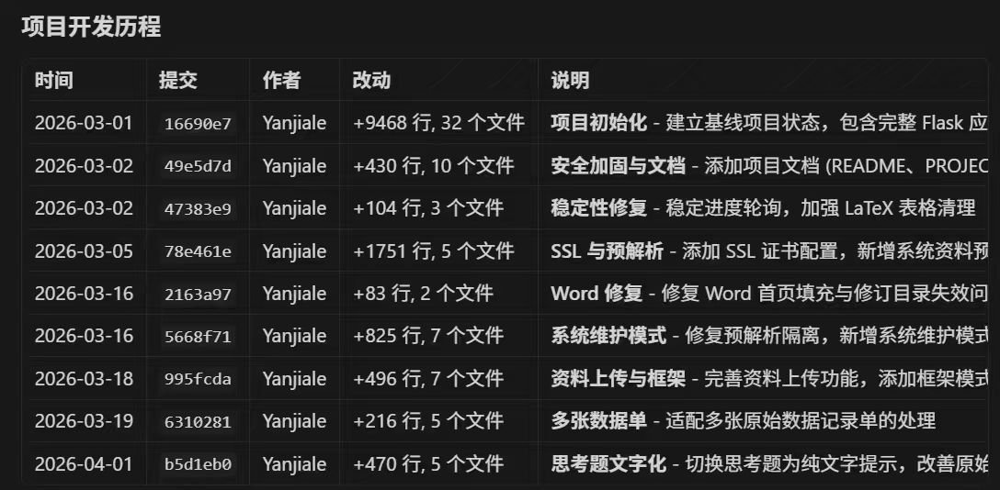
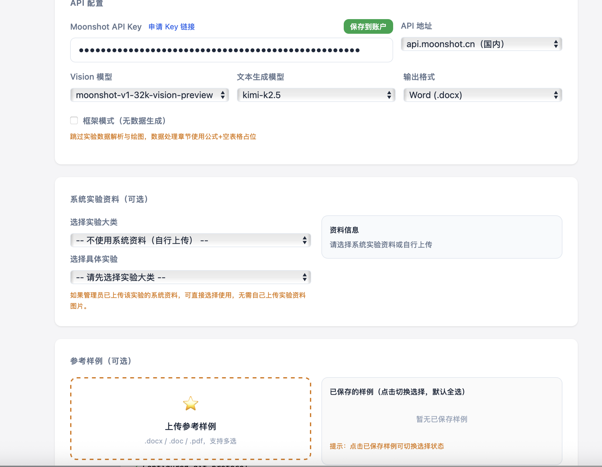
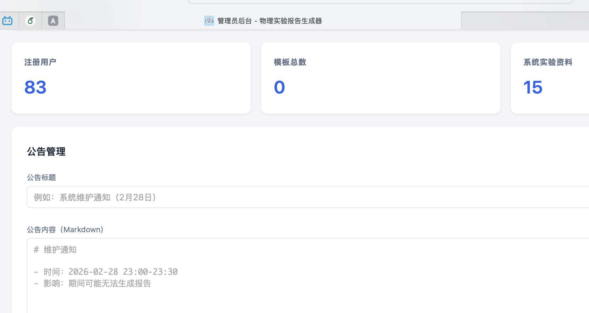

项目复盘
物理实验报告生成器开发随笔与经验回顾
——解决痛点不等于好产品
为什么做这个项目：
大一第一学期重复高频的完成物理实验报告让我深感浪费时间和痛苦——百分之80的时间都在复制粘贴学习通上的实验资料、在word里艰难的打公式，而那段时间正好又是各种Agent在互联网上大肆炒作的时期，于是我萌生了自己搭一个Agent工作流来帮我自动化完成物理实验报告的想法。做着做着我觉得应该“造福”同学，于是从开发个人工具转向了开发web应用。
项目时间线：
- 2026.2.9 : 打完美赛，正式开工，把各类模版和资料拉到本地，并把word模版迁移到tex
- 2026.2.10: 确定模型使用kimi k2.5，因为有免费的15块额度
- 2026.2.13: 搭建好前端html
- 2026.2.21: 前一周去外面过年玩了，开发暂停了一周，接着开始。
- 2026.2.25: 初步完成前后端，测试生成功能基本可用
- 2026.2.26: 决定做成web应用，开发登陆管理等框架
- 2026.3.1 : 一直没用git做版本管理，AI把代码改坏了，艰难修复，开始使用git做版本管理
- 2026.3.3：租了个云服务器和域名，正式上线（reportgenerator.cn）。主要流程完成，剩下都是小修小补。

项目技术概览：
纯技术层面其实没什么好说的，没有很多难点。为了方便，后端用的python的flask框架，前端js。外面套的管理系统都是老生常谈的东西，现在有ai基本随便写。
在agent方面，我选择的是使用kimi k2.5，因为注册账号送15块钱的api key额度。
一个小创新点是为了缓解长上下文下模型幻觉严重的问题，生成的时候不是全串行而是串行+并行。因为大部分章节（原理、方法、仪器等）都依赖于资料而不依赖于上下文，所以可以分开喂资料，每个请求只负责一部分。并行章节完成后生成核心部分，根据用户上传的数据生成核心数据处理部分，随后再次并行加快思考题、误差分析、结论部分的生成速度。
还有一个工程化的优化，我发现用户每次生成都需要先解析一样资料，于是我在后台上传了所有实验资料并调用视觉模型全部预先解析好，大幅缩短了生成事件。
具体技术细节请参见个人GitHub主页。


项目实际落地成果：
截至目前（2026年4月1日）网站共有83个注册用户，客观来讲对于一个这样的项目，成绩还算不错。但我注意到，83名注册用户中只有1/3是配置了API key的，也就是说，在注册用户里，顶多有1/3的人真实使用过该项目。这个转化率我觉得是很低的，因为该工具确实瞄准了本校大一理工科同学的真实痛点：
每周都要完成繁琐的实验报告，而报告除了数据处理部分其他都是枯燥重复的复制粘贴，且学校提供的是图片资料，要先识图提取文字信息再粘贴，相当耗费时间。
按照我一开始的预估，这个工具上线应该能轻松斩获数百位用户，且用户粘性应该较高，可事实并非如此。在上线的这一个月以来，针对这一点，我进行了如下复盘：
第一：该项目本身并不足够完善：
受制于AI本身的不稳定性、word公式渲染、实际上课内容和资料有偏差等问题，生成的报告并不总是能达到可交付的要求，时常需要人工修改。并没有彻底完成自动化。
第二：项目本身领域敏感
按照学校明面上的要求，所有报告都需要学生自己完成，虽然绝大部分同学都有在使用AI辅助，但让AI全面接管报告，特别是这还和自己的成绩挂钩，大部分人还是持谨慎怀疑态度。
第三：易用度不够
这是我觉得配API key的只占注册用户的1/3的重要原因，虽然配备了说明，而且实际操作并不复杂，不到2分钟就能完成，但相当一部分人是抱着好奇的心态来试一试的，但注册才发现不能开箱即用。这种相对较高的门槛无疑劝退了很多人，毕竟大部份人天然怕麻烦，尝试新事物意愿若，哪怕是大学生也是如此。一个解决方案是所有用户都走我的API key，但作为面向学生的敏感项目，我无法从同学那里收取token的成本，所以对于我这个项目，这一点确实是难以解决的。
第四：容易传播的是产品而不是工具本身
物理实验报告有个很关键的特性：重复机械，这是我觉得写它很痛苦的原因，也是我做这个项目的初衷。但反过来说，重复就代表可复制，复用性极强。只要有一个人写好了报告，他就可以分享给室友、同学，他们只用简单的填一填数据就可以完成报告，工作量甚至小于使用我的工具。换句话说，我的工具能够解决0-0.8的工作，剩下0.2需要人工。但有了第一个1之后，继续分发改写需要的的工作量也许只有0.1。工具本身只服务于小部分人，但用工具生产的产品可以广泛传播。
所以一句话概括来说：解决痛点做出好产品爆火
最后再谈谈一些别的体悟：
- 1:AI编程是大势所趋，本项目使用cursor开发，大量代码由AI生成。AI很强大，但要用好AI也是不容易的，我的经验就是要多用plan mode，写好项目文档，尽可能少做大的结构的修改，同时善用Git，做好版本管理。当然，选一个好模型（比如GPT、Opus）是一切的根基。
- 2:大部分用户是不会给你反馈的，我一开始发公告说希望大家能把遇到的问题反馈给我，或者直接在GitHub提交代码。但事实上是大多数人发现你这个不好用会直接选择不用，而不是给你反馈等你迭代。所以上线前的测试是很有必要的。
附：
这是本人第一篇博客，偏随笔和感想。初次写作，望海涵。